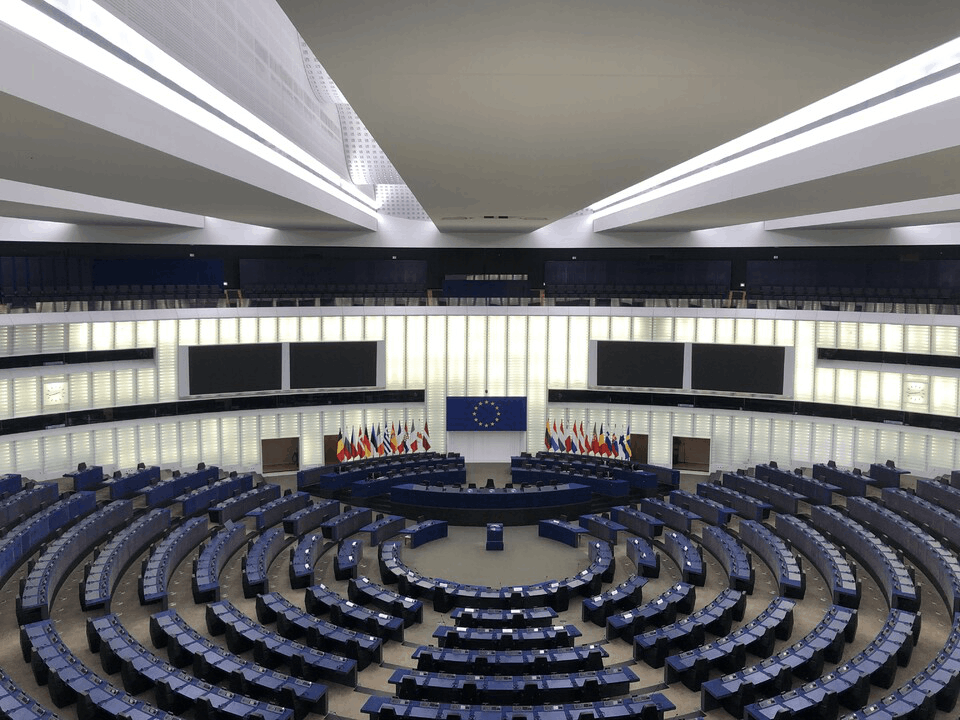

Report on the Inaugural Student Assembly in Strasbourg
Radoslaw Stanislawiak
March 17, 2022
On March 3-4 2022, the inaugural gathering of students from European organizations was held in Strasbourg. The event was held in the framework of cooperation between the European Commission and the European Parliament.
After more than two months of preparation on the panel, together with a group of students from various European universities, I presented proposals on social networking sites and how the European Union can regulate them, without restrictions on freedom of speech.
I believe that our recommendations for improving online platforms under the eye of transparency and security will be considered for a better future for Europe by members of the European Parliament.
A total of 10 panels were held, with nearly 300 students participating. Some of the topics included agriculture and sustainable development, an economic model for the Union, the need for a European Health Union and an inclusive digitized higher education system. All panels were held in compliance with all sanitary recommendations.
I was proud to represent Adam Mickiewicz University in Poznan and the Association of European Universities EPICUR, as one of several students from Poland. In Strasbourg, each participant had the pleasure of visiting the second largest plenary hall in the world. What's more, he also had the opportunity to join the discussion and actively participate in it, while discussing the rethinking of European democracy.
This event showed that young people can, as well as, have a huge impact on the future. Together with the right expert support, remarkable results can be achieved. We met many inspiring people who represent the Ministry of Education and Science, the Union of Universities, as well as the European Parliament. I recommend everyone to work in a cross-cultural team, because we shared many opinions and got to know each other. Together we have great ideas to develop our environment so that it is filled with many unique opportunities for us.
